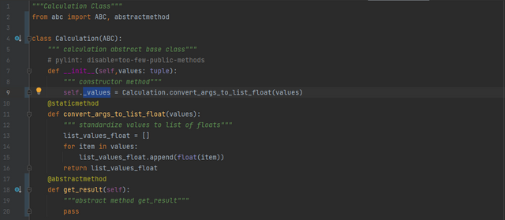
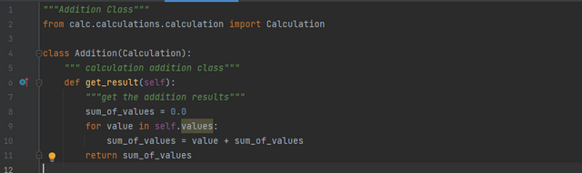
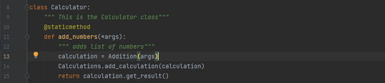

Object-oriented programming is a methodology for writing an organized, cohesive program. The core principles of OOP all imply a minimum level of organization in which to write a program. To exaggerate the point, you wouldn't keep your apples and your toolset in the same cabinet would you? You would keep the apples in the kitchen with the other fruits while your toolset would go in the garage with your other tools. Likewise, you wouldn't build a workshop in the kitchen and cook in the garage. In programming, this organization of like goes with like is what is known as the separation of concerns. Similar to encapsulation, a program should always strive to divide up work based on certain tasks.
This stage of employer may additionally seem tedious or overemphasized. The importance, however, of a nicely-prepared and properly-written application can not be overstated. To supply a extra realistic instance, I'll seek advice from the calculator's report shape (shown above) that has been stated in preceding articles. While now not proven inside the preceding examples, pictured above is the record-structure of the calculator's code. Here, you may see a standard calculator file, with 2 documents within alongside a calculator.Py record and an __init__.Py report. Already, a trendy enterprise shape can be visible from the files. The calculator.Py report is the primary document in which all of the paintings comes collectively. Further, a calculations folder and a records folder can be discovered inner, where the calculations' folder is in fee of the math element of the calculator and the history folder is in price of the lesser capability of the calculator. This separation of challenge is beneficial mainly for reusing code. Say you are writing every other software with calculator functionality. Instead of getting to parse through disorganized documents and refactor code, you'll be capable of reproduction and paste the existing folders into your new initiatives, and with small tweaks for your code, you would be capable of copy and paste your calculator in a totally extraordinary challenge.
SEPERATION OF CONCERN IN CALCULATOR PROGRAM
SOC is used in the Calculator Program such that the program is broken into distinct features that overlap in functionality as little as possible. We have broken the original problem of creating a Calculator to perform Addition into four independent tasks:


In all the above four, all the classes have been separated by function, the get_result is first defined in a different class Calculation and then gives us the result of the addition, the add_calculation adds the calculation to history and the add_numbers function calls the other two functions together to finally create the proper calculator functionality. The four separate classes come together to form the Calculator program, but each action or concern